#4515 Glauben ist alles!
Alternativ: Keeping the Faith
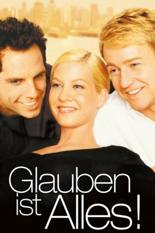 
 IMDB-Wertung: 6.4 / 10
IMDB-Wertung: 6.4 / 10  Metascore: 0
Metascore: 0 
Wenn zwei beste Freunde sich in dieselbe Frau verlieben, führt dies zu einer Belastung der Freundschaft. Wenn diese Männer dazu auch noch Geistliche sind, haben sie nicht bloss mit dem anderen, sondern auch mit sich selbst zu ringen. Dreiecksgeschichte unter der Regie und mit Edward Norton.
Jahr: 2000
Dauer: 118 Minuten
FSK: 6
Land: USA Studio: Buena Vista PicturesTonspuren:
Untertitel:
Auflösung: 1080p (1920x1072) Größe: 6000 MB
Genre: Komödie, Drama, Liebe
Regisseur: Edward Norton
Drehbuch: Isabelle Holland
Soundtrack:
Darsteller:
- Ben Stiller als Rabbi Jake Schram
 Edward Norton als Father Brian Finn
Edward Norton als Father Brian Finn- Jenna Elfman als Anna Riley
- 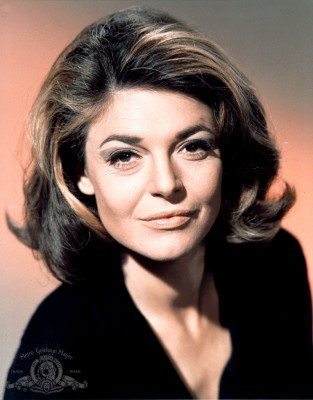 Anne Bancroft als Ruth Schram
- 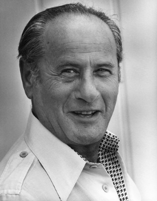 Eli Wallach als Rabbi Ben Lewis
- 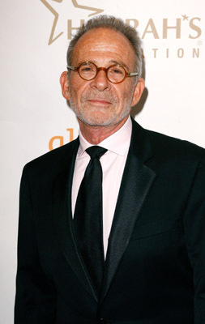 Ron Rifkin als Larry Friedman
- Milos Forman als Father Havel
- Holland Taylor als Bonnie Rose
 Lisa Edelstein als Ali Decker
Lisa Edelstein als Ali Decker- Rena Sofer als Rachel Rose
- Ken Leung als Don
- 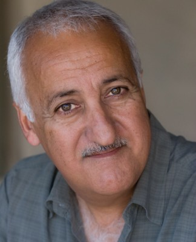 Brian George als Paulie Chopra
- Catherine Lloyd Burns als Debbie
- 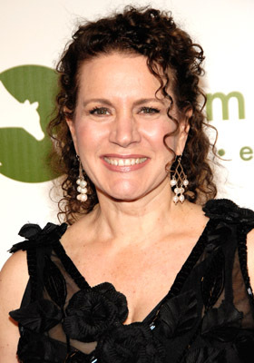 Susie Essman als Ellen Friedman
- Stuart Blumberg als Len
- Samuel Goldberg als Teenage Jake Schram
- Michael Charles Roman als Teenage Brian Finn
- Blythe Auffarth als Teenage Anna Riley
- Jonathan Randell Silver als Alan Klein
- 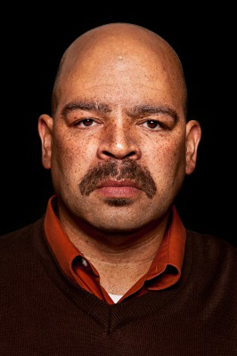 Brian Anthony Wilson als T-Bone
- Kelly Deadmon als Woman in Bar
- 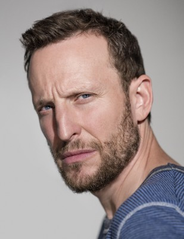 Bodhi Elfman als Howard the Casanova
- Chris Gardner als Basketball Kid #1
- Liz Larsen als Leslie
- 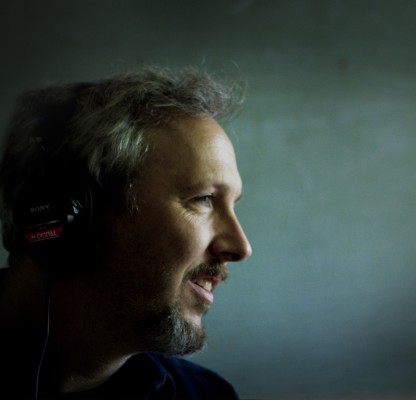 Matt Winston als Matt
- Nelson Avidon als Joel
- 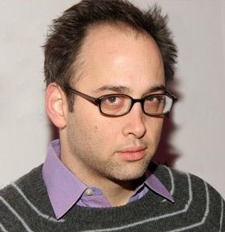 David Wain als Steve Posner
- Donna Hanover als Confessional Woman #1
- Wai Ching Ho als Confessional Woman #2
- Hawk Koch als Rabbinical Professor
- 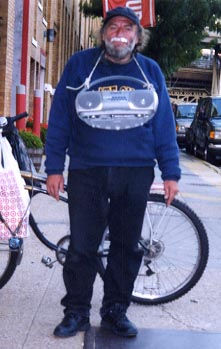 Craig Castaldo als Radio Man
- Derrick Eason als Co-Worker
- Barbara Haas als Mother in Synagogue Reception Room
- Paula Raflo als Mother
- Tony Rossi als Hot Dog Vendor
- Dagmara Dominczyk als Claire
- Sophia Alexis als Party Guest
- 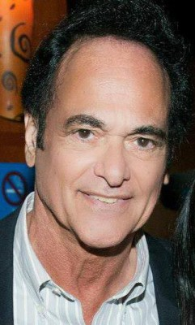 Tony Devon als Jewish Neighbor
- Giovanni Capitello als Bartender at cocktail party
- Bronwen Carson als Sexy Secretary
- Andre Da Silva als Guitar player
- Dan Griffin als Various
- Laura Summer als
- Amy Wilson als Ruth , scenes deleted
- Martin Pfefferkorn als Homeless Man , uncredited
- Shabazz Ray als Himself , uncredited
- Robert F. Saunders als Man in Front Row , uncredited
- Juan Piedrahita als Omar
- Raphael M.A. Frieder als Cantor
- Santi Formosa als Basketball Kid #2
Datei: X:\2000\Glauben ist alles! (2000, FSK6, 1920x1072).mkv seit 04.10.2016
Festplatte: HD 1996-2002
 Es gibt insgesamt 82 Filme in der Gruppe '2000'
Es gibt insgesamt 82 Filme in der Gruppe '2000'